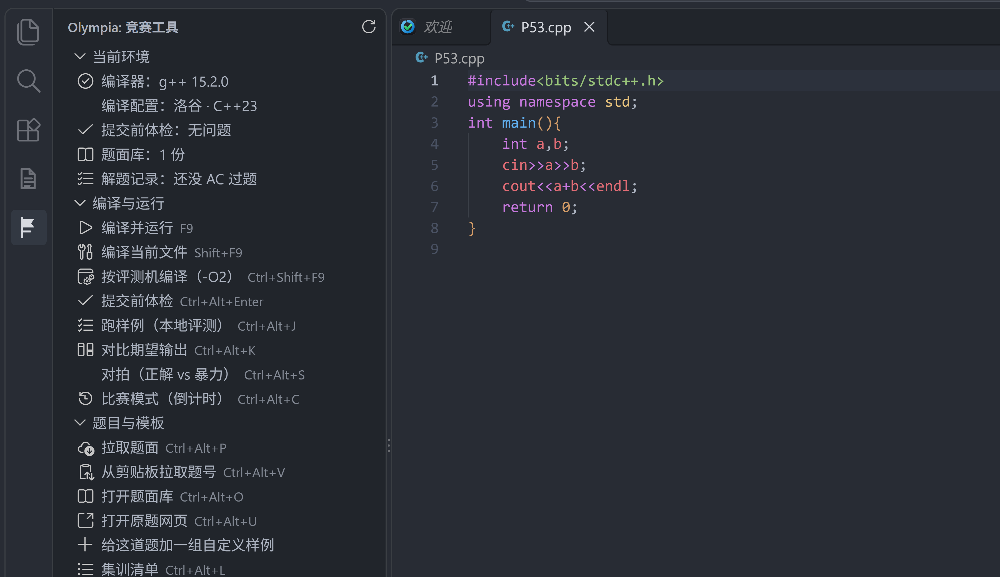
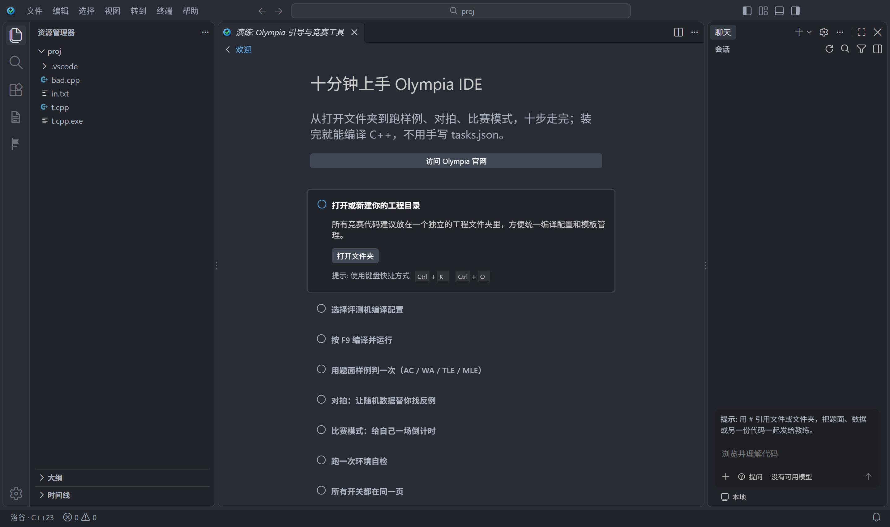
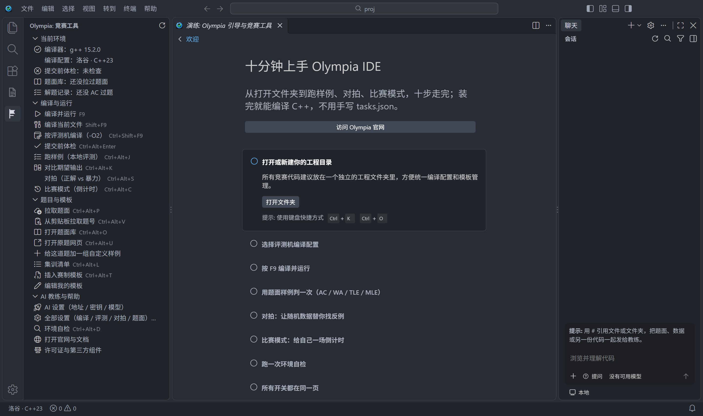

自带编译器
MinGW-w64（GCC 15.2.0，posix 线程模型）整个打进安装器。机房机器上什么都没有也能直接编译， 不需要装任何东西、不需要配环境变量。
bits/stdc++.h 与 pthread.h 都在包里。
Windows 10 / 11 · 64 位 · 全中文
基于 VS Code 的信息学竞赛编辑器。编译器、评测机参数、题面拉取、提交前体检都装好了，
不用配 tasks.json，不用改 PATH，不用装 Python 跑脚本。

下面几张都是在 v1.0.0 的打包版里截的真图，没有拼贴、没有重画。第一张是打开工程目录后的样子，第二张是首启时竞赛工具面板自己展开的样子。


还有两块故意不配图：截图比文字更容易过期，产品改掉一个控件，图就变成承诺了我们不做东西。一个是题面库（Ctrl+Alt+O）——缓存过的题按最近拉取排在前面，离线也能搜题号与标题，行末那颗星是收藏，收藏记录写在工程里的 .olympia/favorites.json，重装系统前把它和题面一起拷走就行。另一个是 Olympia 设置——编译档位、跑样例的内存上限、对拍轮数、题面存放位置都在那一页，顶部能直接搜「对拍」「内存」，写的是 settings.json 里同样的键，改完立刻生效，不用去设置树里找那些以 olympia 开头的条目。
这些是 Olympia 自己加的，不是插件市场里拼出来的。
MinGW-w64（GCC 15.2.0，posix 线程模型）整个打进安装器。机房机器上什么都没有也能直接编译， 不需要装任何东西、不需要配环境变量。
bits/stdc++.h 与 pthread.h 都在包里。
洛谷（C++23）、NOI（C++14）、自定义三档。状态栏左下角常驻显示当前档位， 点一下就能换；把评测机的开关套到本地编译，避免「本地过、评测机挂」。
-x c++ -std=c++23 -fPIC -DONLINE_JUDGE -Wall -fno-asm -lm -march=native
保存时扫描会在评测机上导致编译失败的写法，只报真会挂的，不管代码风格：
#pragma GCC optimize 一类优化属性asm、and、or、not 等 MSVC 能用、GNU C++ 是关键字的名字gets、random_shuffle 等 C++17 起删掉的设施洛谷、Codeforces、AtCoder 题号或链接直接拉进编辑器，也可以从剪贴板识别。 题面、样例、代码在同一个窗口里，不用来回切浏览器。攒到几十道之后题库按 ★ 收藏排： 点过星的排最前，敲 ★ 就只剩它们，做过的自带 ✓。
写完按 Ctrl+Alt+U 回到这道题的原网页交题，链接不用从题面里复制。
拉完题面后按 Ctrl+Alt+J，用题面里的样例数据测当前代码， 按 token 比对、读题面里的时限与内存限制，给出 AC / WA / RE / TLE / MLE。不联网、不需要账号，纯本地判定。
判成 WA 会说清是第几行第几个数不同，还是少输出了一行；再按 Ctrl+Alt+K 把期望与你的输出并排摊开。
选正解、暴力、生成器三个文件，Olympia 编译好之后按轮数喂随机数据，两边输出按 token 比对。
不一致就停下，把那组数据和两份输出写进 stress-fail/，直接点开看；
想留住它，点一下 补进题面样例，以后每次跑样例都会带着这组数据。
不用装 Python，不用手写 fc 脚本，全程不弹命令行窗口。
选一段时长（60 / 90 / 120 / 180 / 240 / 300 / 360 分钟，或自己填），状态栏出现倒计时， 侧栏「当前环境」同步显示剩余时间。重载窗口也接着走，点一下倒计时可以提前收摊。
倒计时期间 AI 教练自动锁住：自己练就不该是开卷。
ACM / IOI 赛制模板一键插入；用不惯就写自己那一份 —— 面板点「编辑我的模板」打开工程里的
.olympia/template.cpp，保存之后每次插的都是它，拉题面建的文件也从它打底。
另有 20 条竞赛常用写法的补全：快速 IO、freopen、
并查集、快速幂、Dijkstra，中英文都搜得到。
常用动作都有快捷键（下表就是全部键位），面板里也各自有一行，不用去命令面板里翻。
界面、向导、报错文案汉化；调试器、源代码管理、测试这些竞赛用不到的视图从侧栏摘掉 （git 扩展干脆没进包，所以那一栏不是被隐藏，是真的没有）， 左边只剩 资源管理器 / 搜索 / 扩展，再加 Olympia 与题面两栏。
竞赛动作放在三个常驻位置：左侧 Olympia 面板、底部状态栏、编辑器标题栏。 面板顶部还会实时显示编译器版本、当前评测机档位、体检结果、缓存题面份数和解题记录（今天 AC 了几道、连着打了几天）。
装完就能按，不需要自己绑。
| 操作 | 键位 | 说明 |
|---|---|---|
| 编译并运行 | F9 | 按当前评测机档位编译，成功后直接运行 |
| 编译当前文件 | Shift+F9 | 只看有没有编译错误，不运行 |
| 按评测机编译（-O2） | Ctrl+Shift+F9 | 打开优化复现评测机行为 |
| 提交前体检 | Ctrl+Alt+Enter | 扫描会在评测机上编译失败的写法 |
| 跑样例 | Ctrl+Alt+J | 用题面样例本地判定 AC / WA / RE / TLE / MLE |
| 对比期望输出 | Ctrl+Alt+K | WA 的那一组并排打开：左边期望、右边你的输出 |
| 对拍 | Ctrl+Alt+S | 随机数据比对正解与暴力，不一致留下那组数据 |
| 比赛模式 | Ctrl+Alt+C | 选时长开始倒计时，再点一次结束 |
| 环境自检 | Ctrl+Alt+D | 逐项检查编译器、参数、AI 配置 |
| Olympia 设置 | Ctrl+Alt+, | 一屏改完编译档位、对拍轮数、题面位置等全部开关 |
| 切换评测机档位 | 点状态栏 洛谷 · C++23 | 洛谷 / NOI / 自定义 |
| 拉取题面 | Ctrl+Alt+P | 洛谷、Codeforces、AtCoder |
| 从剪贴板拉题号 | Ctrl+Alt+V | 复制网页链接后直接识别 |
| 打开题面库 | Ctrl+Alt+O | 在 .olympia/problems 里按题号或标题搜，不用联网 |
| 题面进侧栏 | Ctrl+Alt+M | 挑一道题，把题面渲染在左栏：Markdown、公式、样例都在，代码区不受影响 |
| 打开原题网页 | Ctrl+Alt+U | 按当前文件认出这道题，去它的原题页交题 |
| 集训清单 | Ctrl+Alt+L | 一份命名题单 + 时长，选它就开一场 |
| 插入赛制模板 | Ctrl+Alt+T | ACM / IOI 起手代码 |
不绑账号、不订阅、不上传代码到我们的服务器。填一个 OpenAI 兼容的地址和自己的 API Key 就能用， 不填也完全不影响编译运行。
baseUrl，Key 在密码框里输入（存在系统密钥库，不写进配置文件）/models 拉，拉不到就手动填，两行一个https://api.deepseek.com/v1。
额度、价格、怎么充值都是那家服务商的事，Olympia 不经手、不抽成，也看不到你的 Key。配好之后在聊天面板里直接问就行——教练就是这个面板的默认回答者，它会自动带上当前文件的代码。想更聚焦就用三个指令：
/wa：结合题面、样例与你的输出，列出最可能的错因和验证方法/hint：只给方向性提示与关键不变量，不输出完整代码/check：提交前风险清单：边界、溢出、复杂度、读入终止、多组数据264 MiB
内置 MinGW 编译器，装完直接能用。机房、家里、重装系统的机器都选这个。
下载网络引导安装器1.8 MB，自动下载全部分卷并逐个校验 SHA256，然后进入中文安装向导。 这一版的全部文件与校验值在这里。
把下面列出的所有文件放进同一个文件夹，双击 OlympiaSetup.exe。缺任何一片，向导会提示「安装程序需要下一张磁盘」。
| 文件 | 大小 | |
|---|---|---|
OlympiaSetup.exe | 2.6 MB | |
OlympiaSetup-1.bin | 91.8 MB | |
OlympiaSetup-2.bin | 94.4 MB | |
OlympiaSetup-3.bin | 88.2 MB |
全部文件共 276,926,349 字节，校验值见同目录 SHA256SUMS.txt。
还没打这个包
不含内置编译器，只适合系统里已经有 g++ 的机器。
这一版还没有构建，所以体积数字我们也给不出——不会先写一个估算上去。
不选它也不影响使用：完整版自带 g++，装完自己找到自己的编译器，
不需要系统里预装任何东西，也不碰 PATH。
.cpp，按 F9。每次运行前会问你输入从哪来：直接运行（空 stdin）、选一个数据文件，
或者在终端里运行——程序开着等你自己敲，调试时不用先把数据写成 .in。-O2。安装位置是 %LocalAppData%\Programs，不需要管理员权限，也不会改动系统 PATH。
不是。Olympia 是 VS Code 的 fork，竞赛功能改在工作台本身：侧栏容器、状态栏、标题栏、菜单、 出厂主题和默认设置都在产品里，安装完就是竞赛环境，不需要再去扩展市场装东西。
因为安装包还没有代码签名证书。点「更多信息」→「仍要运行」即可，这只影响第一次；
安装器本身是 Inno Setup 生成的标准程序，装完之后的 Olympia.exe 也在
%LocalAppData%\Programs\Olympia IDE，可以随时删干净。
360 / 电脑管家之类的安全软件也可能把它当陌生程序：装之前先在官网核对校验值， 被误报就加白名单，不要因为弹了提示就换别的下载站。
发行页同目录有 SHA256SUMS.txt。Windows 自带工具就能核对，不用装任何东西——
在安装文件所在文件夹的地址栏输入 cmd 回车，然后：
certutil -hashfile OlympiaSetup-1.bin SHA256
把输出的那串和 SHA256SUMS.txt 里对应文件那行比一下。
用引导安装器（OlympiaSetup-web.exe）就不用手动核对：它每下完一个分卷自己算一遍，
对不上会直接停下并说是哪一片。
三处，各自独立：程序装在 %LocalAppData%\Programs\Olympia IDE（当前用户目录，
不要管理员权限）；设置与界面状态在 %AppData%\.olympia-ide\User；
题目、集训清单和你自己的模板都在工程文件夹里的 .olympia\ 下。
所以换机时把题目文件夹拷走就够了——练习记录跟着文件夹走， 不跟着账号走。AI 教练的密钥存在系统密钥库里，不在上面任何一个文件夹中， 换机器要重新填一次（这是有意的：它不该被拷进 U 盘）。
卸载就是删掉安装目录；想连设置一起清干净，再删 %AppData%\.olympia-ide。
编译、运行、体检、模板、题面文件全部离线。只有拉取在线题面和 AI 教练需要网络， 两者都是可选功能，不配也不影响其他部分。
v1.0 只出 Windows x64 —— 竞赛机房的现实就是 Windows，所以先把这一个平台做透。 macOS 和 Linux 不是不做，是在路线图上，只是还没排到。具体什么时候能出，现在还给不出日期， 但不会一直只有 Windows。
装完，就打比赛。
下载 Olympia IDE v1.0.0